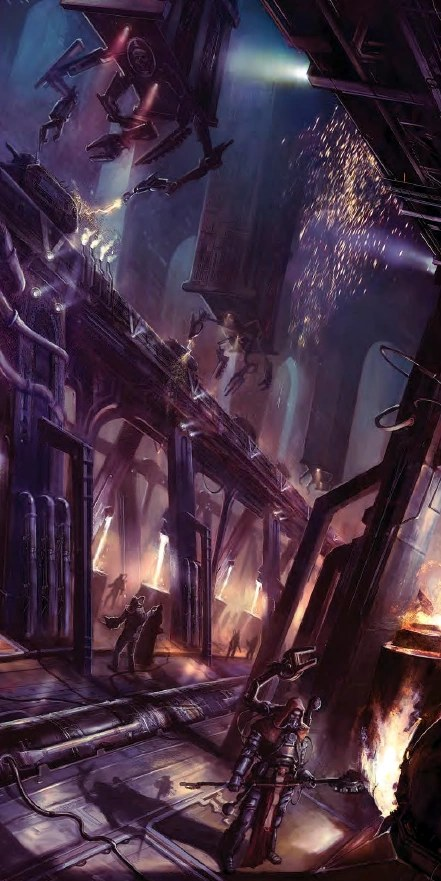
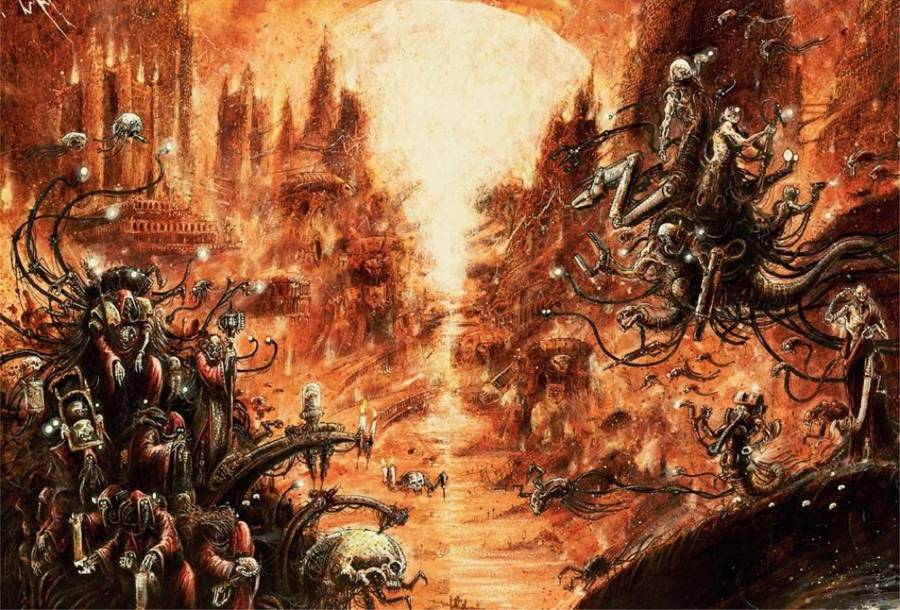

Forge world
| Forge world | |
|---|---|
| Domain of the Adeptus Mechanicus | |
 The interior of a forge world manufactorum, from a votive pict of the Cult Mechanicus | |
| Administratum class | Forge world; recorded by Mars, not by the Administratum[a] |
| Production grade | I-Maximus (highest) to IV-Tertius (lowest) |
| Typical tithe | Aptus Non; pays in arms, vehicles and starships under the Treaty of Olympus |
| Ruler | A fabricator-general or archmagos |
| Population | Hundreds of millions to tens of billions, most of them menials and servitors |
| Number | Several hundred major forge worlds (before 999.M41) |
| Military | Skitarii Legions, Titan Legions, Knight households, Legio Cybernetica |
| Examples | Mars, Ryza, Metalica, Stygies VIII, Lucius, Agripinaa, Graia, Gryphonne IV (destroyed) |
A forge world (also forge-world) is a planet of the Imperium of Mankind ruled by the Adeptus Mechanicus and given over to industry, research and the worship of the Omnissiah. Forge worlds are the arsenals of the Imperium. They build its starships, tanks, Titans and weapons, train its Tech-priests and house its oldest stores of technical knowledge. Under the Treaty of Olympus of c. 739.M30 they are sovereign domains of the Mechanicus, bound to supply the Imperium but outside the authority of its planetary governors and the Administratum.[1][2]
The first forge world was Mars, the Forge World Principal, and most others were founded as its colonies during the Age of Strife and the Great Crusade. A forge world is usually covered in manufactoria, forge-cities and refineries, its air and seas poisoned by millennia of industry. Its people are graded from birth and assigned to the labour, worship or warfare of the Machine God. Each forge world produces its own pattern of equipment, so that a lasgun or tank built on Lucius differs in small ways from one built on Mars or Ryza.[3][1]
Several hundred major forge worlds existed before the opening of the Great Rift in 999.M41. At least seven were destroyed in the years that followed and many more were cut off in the Imperium Nihilus. In the Era Indomitus the surviving forges are working at the limit of their capacity to supply the Indomitus Crusade, and the loss or recovery of a forge world is counted among the most important events of any campaign.[4][5]
History
[edit]Origins
[edit]The Mechanicum of Mars arose in the Age of Strife, when the priests of the Cult of the Machine conquered the Red Planet and built a theocracy around the preservation of lost technology. While Terra fell into the anarchy of the Unification Wars, Mars sent out explorator fleets in search of lost knowledge, the Quest for Knowledge of the Cult. Despite warp storms and the loss of its navigators, some fleets reached distant systems and founded colonies in the image of Mars. These were the first forge worlds. The dates of their foundation are mostly lost; Martian records place the oldest surviving colonies in M25 to M28.[2][3][b]
The Treaty of Olympus and the Great Crusade
[edit]
In c. 739.M30 the Emperor of Mankind and the Fabricator-General of Mars concluded the Treaty of Olympus, also called the Treaty of Mars. The Mechanicum recognised the Emperor as the Omnissiah, the Machine God made flesh, and agreed to supply the armies of Terra. In return Mars and all its colonies were recognised as sovereign, exempt from Imperial law and tithe. When the Great Crusade began in c. 798.M30, Mechanicum fleets went with the Emperor's armies and found many forge worlds that had survived the Age of Strife in isolation. Mechanicum records name this period the Great Expansion, since hundreds of lost forge worlds and Knight worlds were rediscovered or newly founded.[2][6]
The Horus Heresy
[edit]The Horus Heresy (005–014.M31) split the forge worlds. On Mars itself the Fabricator-General Kelbor-Hal sided with Horus, and the Schism of Mars (005–006.M31) set Mechanicum against Mechanicum. Across the galaxy each forge world chose a side. Some, such as Graia, stayed loyal. Others, including the forges of the Stygies VIII moon whose Legio Vulcanum turned traitor, were divided. The traitor forges that fled to the Eye of Terror became the hell-forges of the Dark Mechanicum. After the war the Council of Terra separated the loyal Adeptus Mechanicus from the traitors in 012.M31, and the surviving forge worlds were bound more closely to the Imperium.[7][2]
The long watch
[edit]In the following ten thousand years the forge worlds supplied every war of the Imperium. They also suffered their own schisms, among them the Moirae Schism of M35, and were often the target of the Imperium's enemies. The forge world of Gryphonne IV, home of the Legio Gryphonicus, was overrun by Hive Fleet Leviathan in the late 41st millennium and lost. Ryza withstood a long Ork invasion led by the warlord Grax in the same period. The forges of Metalica waged a campaign of extermination against the Ork empire of Charadon.[8][3]
The Era Indomitus
[edit]The opening of the Great Rift in 999.M41 cut Mars off from many of its daughter worlds. Seven forge worlds were destroyed outright in the storms and invasions that followed, and others are known only from fragmentary astropathic reports. The Archmagos Dominus Belisarius Cawl provided the Indomitus Crusade with the Primaris Space Marines, and the forge worlds of the Imperium Sanctus were ordered to raise production for the Crusade fleets. Imperial records of the early 42nd millennium describe campaigns in which forge worlds led by Mars and Graia sent fleets to recover resources, and a war with the Necrons for deposits of noctilith. Agripinaa, near the ruins of Cadia, has stood on the front line against the forces of Abaddon the Despoiler since 999.M41.[4][5]
Government
[edit]Each forge world is ruled by its own priesthood under a supreme magos, who is styled fabricator-general on the greater worlds and archmagos or forge master on lesser ones. The rulers of forge worlds owe spiritual obedience to the Fabricator-General of Mars, who sits among the High Lords of Terra, but in practice each world governs itself and pursues its own research. Rivalries between forge worlds over territory, resources and doctrine are common, and some have fought each other.[3][1]
Forge worlds are not tithed by the Administratum. Instead the Mechanicus records each of its worlds with a production grade, from I-Maximus for the greatest to IV-Tertius for the least, which indicates its importance. Ancient pacts oblige forge worlds to supply particular regiments, Chapters and fleets, and many Space Marine Chapters hold long-standing agreements with the forge world nearest to their homeworld.[3]
Society
[edit]
Life on a forge world is harsh even by Imperial standards. Every child is measured and graded. The most promising are inducted into the priesthood of the Cult Mechanicus; a share of the strongest are trained and augmented as Skitarii; the remainder become menials or labour units, who work at the same trade as their parents and pass it to their children. Those who fail in their service, are crippled or commit crimes may be made into servitors, the lobotomised cyborgs who perform most repetitive tasks.[3][1]
The Tech-priests regard knowledge as sacred and invention as suspect. Machines are believed to hold a machine spirit that must be appeased with rites, unguents and prayers, and the forge worlds' great manufactoria are also temples. Forge-worlders know more of technology than most citizens of the Imperium, but understand little more of how it works.[3]
The surface of a typical forge world is covered by forge-cities and refineries that stretch from horizon to horizon, each ruled by a forge master. The original biosphere has nearly always been destroyed, seas have in some cases been drained to make room for industry, and the air is unbreathable without filtration. Some forge worlds have moving cities that cross the surface to escape their own pollution. Others are built inside hollow worlds or moons: Lucius is believed to contain an artificial star at its core.[1][8]
Military
[edit]A forge world fields its own armed forces. Its Skitarii Legions defend it and accompany its expeditions; its Titan Legions are the most powerful war engines in the Imperium; and its allied Knight houses, such as House Taranis of Mars and House Raven, serve it as vassals. The Legio Cybernetica maintains battle robots, and the Mechanicus maintains its own fleets of warships and explorator vessels. Each forge world's forces wear its colours and use its patterns of wargear.[8][3]
Patterns and production
[edit]Every forge world builds its equipment to its own patterns, inherited from the Standard Template Construct fragments and design archives it holds. A Leman Russ tank, a lasgun or a suit of power armour may exist in many patterns, named for the forge world that makes them, such as the Mars, Lucius or Ryza patterns. The differences are often small, but the tech-priests treat each pattern as sacred and resist any change to it. Patterns of rare equipment may be built on only a single forge world, which gives that world great influence over the Imperium's forces.[3][8]
The output of the great forge worlds is enormous. A single forge world may supply the armour of whole army groups and the hulls of battlefleets, and the loss of one can leave sectors short of munitions for decades. The Departmento Munitorum negotiates with the forge worlds for their output, since it has no power to command them.[1]
Notable forge worlds
[edit]
| World | Segmentum | Known for | Status (Era Indomitus) |
|---|---|---|---|
| Mars | Segmentum Solar | Forge World Principal; seat of the Fabricator-General; Legio Ignatum and House Taranis | Imperial |
| Ryza | Ultima Segmentum | Plasma and las technology; withstood the Ork warlord Grax (late M41) | Imperial |
| Metalica | Ultima Segmentum | Legio Metalica; war against the Ork empire of Charadon | Imperial |
| Stygies VIII | Segmentum Pacificus | A moon of a gas giant; munitions, Leman Russ Vanquisher patterns; long suspected of studying xenos technology; its Legio Vulcanum turned traitor in M31 | Imperial |
| Lucius | Segmentum Obscurus | Hollow world around an artificial sun; Legio Astorum; the Lucius-pattern lasgun | Imperial |
| Agripinaa | Segmentum Obscurus | Chief supplier of Cadia and the Cadian Gate | Imperial; front line since 999.M41 |
| Graia | Segmentum Tempestus | Loyal in the Heresy; Legio Astraman; Skitarii famed for refusing to retreat | Imperial |
| Gryphonne IV | Segmentum Tempestus | Home of the Legio Gryphonicus | Destroyed by Hive Fleet Leviathan (late M41) |
| Urdesh | Segmentum Pacificus | Principal forge of the Sabbat Worlds | Imperial; contested in the Sabbat wars |
Hell-forges
[edit]The forge worlds that turned traitor in the Heresy, and others corrupted since, are called hell-forges by the Imperium. They lie mostly within the Eye of Terror and the Maelstrom, and their Dark Mechanicum masters fuse machine and daemon. Some serve Vashtorr the Arkifane, a daemon of the forge active in the Era Indomitus. The Adeptus Mechanicus regards their existence as the gravest heresy.[7][4]
Timeline
[edit]| Date | Event |
|---|---|
| c. M25–M28 | Oldest surviving colonies of Mars founded[c] |
| c. 739.M30 | Treaty of Olympus makes forge worlds sovereign Mechanicum domains |
| c. 798.M30–005.M31 | Great Crusade and the Great Expansion of the Mechanicum |
| 005–006.M31 | Schism of Mars; forge worlds divided in the Heresy |
| 012.M31 | Adeptus Mechanicus separated from the traitor Mechanicum |
| M35 | Moirae Schism |
| Late M41 | Gryphonne IV lost to Hive Fleet Leviathan; Ryza besieged by Orks |
| 999.M41 | Great Rift; seven forge worlds destroyed in the following years |
| Early M42 | Forge worlds supply the Indomitus Crusade |
See also
[edit]Notes
[edit]References
[edit]- ^ a b c d e f Codex Imperialis (rev. 980.M41). Adeptus Terra.
- ^ a b c d Pact of Olympus, with Martian Commentaries (c. M31). Archive of the Fabricator-General, Mars.
- ^ a b c d e f g h i Adeptus Mechanicus (rev. 995.M41). Catechism of the Forge Worlds. Mars.
- ^ a b c Records of the Indomitus Crusade (ongoing). Office of the Lord Commander.
- ^ a b Cawl, Belisarius (c. 999.M41). Notes on the Ultima Founding. Mars.
- ^ Liber Primarchus (M32, revised M41). Administratum Archive, Terra.
- ^ a b Chronicles of the Heresy (sealed). Logos Historica Verita, Terra.
- ^ a b c d Lexicanum Martialis. Officio Militaris.